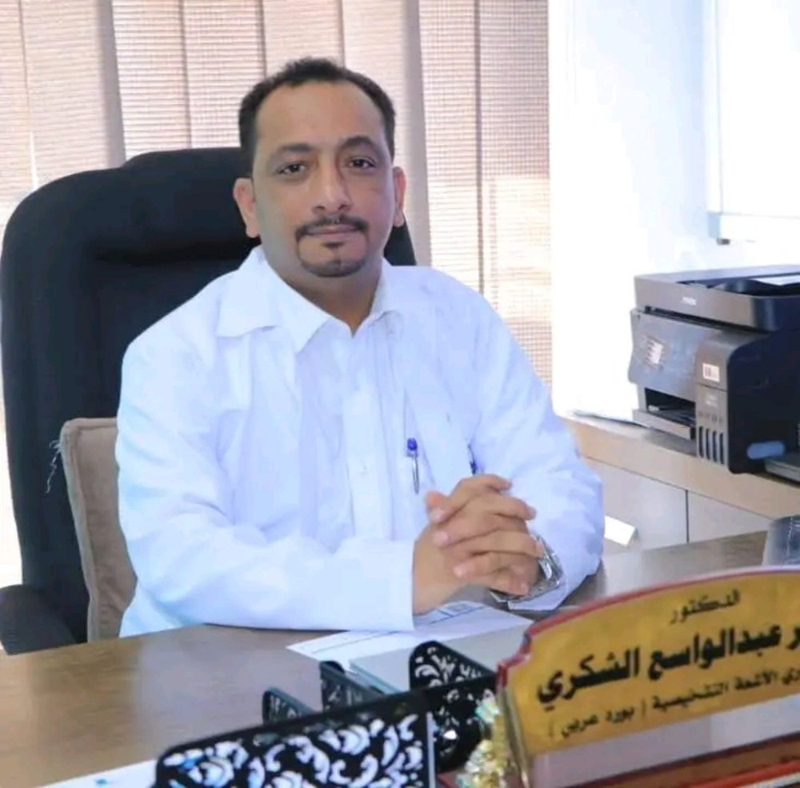

الدكتور منير الشكري
الأشعة التشخيصية والسونار والدوبلر وسحب الخزع والعينات وتركيب القساطر تحت توجيه السونار
تُعنى العيادة بتقديم الفحوصات التشخيصية والإجراءات الموجّهة بالتصوير، وفق التقييم الطبي وملاءمة الإجراء لحالة المريض.
مجالات الخدمات: فحوص السونار، الدوبلر الملون، سحب الخزع والعينات، وتركيب ومتابعة قساطر التصريف تحت توجيه السونار.
المؤهلات والخبرات: تُضاف بعد استلام السيرة المهنية المعتمدة من الطبيب. لا تُعرض شهادات أو سنوات خبرة غير مؤكدة.
الدوام: السبت إلى الخميس من 8 صباحًا حتى 10 مساءً، الجمعة إجازة.
العنوان: صنعاء، شارع الزبيري، برج المختبرات الدولية.
